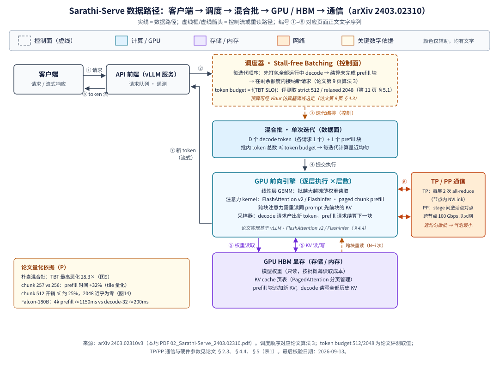

页内目录（点击展开/折叠）
Sarathi-Serve：以 chunked-prefills 与 stall-free batching 驯服 LLM 推理的吞吐—延迟权衡
一句话判断
对需要「同时守住交互式尾延迟与 GPU 吞吐」的在线 LLM 服务，Sarathi-Serve 用切块 prefill（chunked-prefills）与不停批调度（stall-free batching）把吞吐—延迟从二选一变成一个可调的 token 预算旋钮；代价是 prefill 效率的小幅折价（图 14：Yi-34B / TP-2，最小块 512 时 prefill 计算开销 ≤约 25%、2048 块近零，相对不切块归一化，精度论文未明确披露）与按部署调参的运维成本。P I（判断为编辑观点）
3 分钟速读
- 问题：prefill 并行算整个 prompt、计算受限；decode 一次每请求只算 1 个 token、内存受限。现有调度要么 prefill 优先（vLLM/Orca）——长 prefill 迭代把运行中请求的 decode 卡住数秒（generation stall）；要么 decode 优先（FasterTransformer）——小批量浪费算力。P
- 洞察：prefill 吞吐在序列长约 512 token 就饱和，把长 prompt 切成近等计算量的块，既不损失 prefill 效率，又让每次迭代时长有上界。P
- 机制：stall-free batching（算法 3）每迭代先打包全部运行中 decode，再续算未完成 prefill 块，最后在剩余 token 预算内接纳新请求；预算由 TBT SLO 推导（评测取 strict 512 / relaxed 2048）。P
- 结果：相对作者复现的 vLLM/Orca 基线，服务容量（sustained QPS）：Mistral-7B / 1×A100 最高 2.6×，Yi-34B / 2×A100 最高 3.7×，Falcon-180B / 2 节点×4×A100（TP4-PP2）端到端最高 5.6×；负载为 openchat_sharegpt4（输入/输出中位 1730/415 token）与 arxiv_summarization（7059/208 token），strict/relaxed SLO；精度论文未明确披露。P
- 边界：数字不可与其他论文横比；chunk 有开销（图 14：Yi-34B / TP-2，≤约 25%@512 块）；与 disaggregated 方案（DistServe 等）的定量对比论文明确留白（第 13 页 §6）；仓库为科研原型、非完整 vLLM 功能对等（第 18 页附录 A）。P R
论文声称的主要结果
| 指标（口径） | 数字 | 模型 / 硬件 | 精度 | 负载 / SLO | 基线 | 来源 |
|---|---|---|---|---|---|---|
| 服务容量倍数（sustained QPS 倍数） | 2.6× | Mistral-7B / 1×A100 80GB | 论文未明确披露 | openchat_sharegpt4 + arxiv_summarization（输入/输出中位 1730/415 与 7059/208 token，泊松到达）；strict/relaxed SLO | vLLM | P 摘要（第 1 页）、§7（第 14 页） |
| 服务容量倍数 | 最高 3.7× | Yi-34B / 2×A100（TP-2） | 论文未明确披露 | openchat_sharegpt4（输入/输出中位 1730/415 token）；strict SLO | vLLM（较 Orca 为 4.0×） | P §5.1、图10/11（第 11 页） |
| 容量倍数（PP 场景） | 6.3× / 4.3× | LLaMA2-70B / 8×A40（TP4-PP2） | 论文未明确披露 | openchat_sharegpt4（输入/输出中位 1730/415 token）；strict SLO | Orca / vLLM | P §5.1、图11（第 11 页） |
| 端到端服务容量倍数 | 最高 5.6×（图11a 标 5.62×） | Falcon-180B / 2 节点 ×4×A100（TP4-PP2） | 论文未明确披露 | openchat_sharegpt4（输入/输出中位 1730/415 token）；strict SLO | vLLM | P 摘要（第 1 页）、§1（第 3 页）、图11a（第 11 页） |
| 容量倍数（并行策略对比） | 4.3× / 3.6× / 1.48× | Falcon-180B / 2 节点，100 Gbps 以太网 | 论文未明确披露 | openchat_sharegpt4（输入/输出中位 1730/415 token）；strict（4.3×/3.6×）、relaxed（1.48×） | vLLM TP-8 / vLLM TP4-PP2 | P §5.3、图13（第 12 页） |
问题背景
两阶段天然不对称
LLM 推理分 prefill（一次并行处理全部 prompt token，产出首 token）与 decode（每迭代每请求只处理 1 个 token）两阶段。prefill 计算受限、吞吐对批量几乎不敏感；decode 内存受限、批量越大越摊薄权重读取成本，吞吐随批量近似线性提升。论文图 3/图 4（Mistral-7B、单张 A100、prompt/输出长度均 1024）实测了这一点，并指出线性层占两阶段总时间 80% 以上（第 1 页摘要、第 3 页 §2.2、第 5 页 §3.1 与图 3/图 4）。P
两类现有调度都有硬伤
- prefill 优先（vLLM、Orca 的迭代级调度）：急切准入新 prefill。一个长 prompt 的 prefill 迭代可执行数秒，期间所有运行中请求的 decode 被卡住——论文称为 generation stall。图 1 实测 vLLM 服务 Yi-34B（2×A100、128 请求、arxiv-summarisation trace）时出现持续数秒的 stall，且负载升高时 P99 TBT 显著恶化（第 1 页图 1、第 2 页 §1）。P
- decode 优先（FasterTransformer、Triton 等请求级批处理）：批内全部 decode 完成才准入新请求，TBT 有保障，但先完成的请求不能退出、批规模持续缩水直至最慢请求结束，吞吐因此严重受限（第 2 页 §1、第 4 页 §2.5 与算法 1）。P
流水线放大问题
跨节点部署常用流水线并行（PP）：通信少、只需点对点。但混合长短 prefill/decode 的微批执行时间差异巨大，产生三类流水线气泡（prefill 长度差、prefill/decode 计算差、decode 间 KV 上下文差）。论文以 Falcon-180B 举例：一个 4k prompt 的 prefill 迭代约 1150ms，而 batch 32 的纯 decode 迭代约 200ms，二者交错即可产生约 950ms 的气泡（第 7 页 §3.3、图 8；该示例未指明所用 GPU 配置与精度，均按论文未明确披露处理）。P
指标与约束
论文采用 TTFT（time-to-first-token，取中位）与 TBT（time-between-tokens，取 P99）为延迟指标，Capacity 为「在延迟目标内可持续服务的最大请求负载（QPS）」——吞吐与延迟被统一进一个容量口径（定义见第 4 页 §2.4，容量实验见第 10–11 页 §5.1）。P
核心机制
1 · chunked-prefills：把长 prefill 切成近等计算量的块
依据两条：其一，prefill 吞吐在序列长约 512 token 即进入饱和（图 4 实测：Mistral-7B、单张 A100、长度 1024；第 5 页图 4、第 8 页 §4.1），把千级 token 的 prompt 切成 512 量级的块几乎不损失 prefill 效率；其二，每次迭代的计算量因此有了硬上界，不再取决于 prompt 总长。P
2 · stall-free batching：控制面的迭代编排（算法 3）
- 先打包当前批中所有运行中请求的 decode token；
- 再续算未完成的 prefill 块；
- 最后在剩余 token 预算内准入新请求（按预算切出其第一个块）；
- 提交混合批执行，过滤已完成请求，进入下一迭代。
关键不变量：decode 永远在批内、每迭代 token 总量 ≤ token budget = f(TBT SLO)。因此新请求的 prefill 永不推迟运行中请求的 decode——「stall-free」由此得名。P
3 · token 预算的三个约束
- 切太碎的代价一（GPU 利用率）：块小于计算饱和点后线性层效率下降；
- 切太碎的代价二（KV 重读）：分 N 块时第 i 块的注意力需重读前 i−1 块的 KV，增加 HBM 读取流量（计算量不变）；
- tile 量化：GPU 矩阵按 tile 分块，257 token 的块可比 256 多耗 32% prefill 时间（第 9 页 §4.3；该 32% 为论文给出的 tile 量化示例，对应模型/硬件/精度论文未明确披露）——预算应取 2 的幂附近。P
论文用 Vidur 仿真器对目标部署做一次性剖析来选预算（第 9 页 §4.3）；评测取 strict 512 / relaxed 2048（LLaMA2-70B relaxed 用 1536 以压流水线气泡）（第 11 页 §5.1 末段）。P
4 · 实现与控制面/数据面边界
系统实现于 vLLM 开源版之上：新增 paged chunk prefill 支持，接入 FlashAttention v2 与 FlashInfer kernel（评测统一用 FlashAttention 后端，因其支持的模型更广），扩展了调度策略、流水线并行与遥测系统，TP/PP 通信使用 NCCL（第 9 页 §4.4、第 10 页 §4.4 末段）。P
按论文事实区分：控制面=迭代级调度器（算法 3 的编排与预算执行）；数据面=执行引擎（GEMM、注意力 kernel、KV cache 读写、采样与 NCCL 通信）。「调度器只做编排、不碰张量数值」是本站对其结构的编辑概括。I
GPU / 系统数据路径

端到端文字序列
- ① 请求进入：客户端请求到达 API 前端（vLLM 服务进程）入队，遥测系统记录到达时间。P
- ② 调度编排（控制面）：每轮迭代，调度器按算法 3 依次打包运行中 decode → 续算未完成 prefill 块 → 在剩余额度内准入新请求（第 9 页算法 3）。P
- ③ 混合批成形：D 个 decode token + 1 个 prefill 块，批内 token 总数 ≤ token budget（strict 512 / relaxed 2048），每迭代计算量近均匀。P
- ④ GPU 前向：混合批进入执行引擎逐层计算——线性层 GEMM 与注意力 kernel（FlashAttention v2 / FlashInfer 的 paged chunk prefill 路径）。P
- ⑤ 显存访问：线性层从 HBM 读模型权重（按批摊薄）；注意力经 PagedAttention 页表读写 KV cache——prefill 块追加新 KV，decode 读写全部历史 KV；跨块注意力重读同 prompt 先前块的 KV（第 i 块重读 i−1 次）。P
- ⑥ 并行通信：TP 每层两次 all-reduce（节点内 NVLink）；PP 在流水线 stage 间点对点传激活（论文跨节点为 100 Gbps 以太网，第 4 页 §2.3、第 10 页表 1），近均匀微批使气泡最小。P
- ⑦ 采样回传：decode 请求采样出新 token 追加到输出序列；prefill 请求算完首块不产出用户可见 token，等待后续块（最后一块产出首 token）。P I（首 token 产出时点为编辑按 chunked 机制推演）
- ⑧ 流式响应：token 经 API 前端流式返回客户端；首 token 到达即 TTFT，相邻 token 间隔即 TBT——stall-free 保证 TBT 无 prefill 干扰尖峰。P
| 组件 | 面 | 职责 | 证据 |
|---|---|---|---|
| API 前端（vLLM 服务） | 接入 | 请求队列、流式输出、遥测 | P §4.4（第 9–10 页） |
| 迭代级调度器 | 控制面 | 算法 3 编排、token 预算执行、新请求准入 | P §4.2–4.3（第 8–9 页） |
| 执行引擎（GPU） | 数据面 | GEMM、注意力 kernel、采样 | P §4.4（第 9 页） |
| KV cache（HBM） | 数据面 | PagedAttention 分页存取；prefill 块追加、decode 读写 | P §4.1–4.2（第 8 页） |
| NCCL 通信 | 数据面 | TP all-reduce / PP 激活点对点传输 | P §4.4（第 10 页） |
架构权衡
吞吐 ↔ 延迟：预算旋钮
token budget 是显式旋钮：strict 512 下 Mistral-7B（1×A100）相对 vLLM 容量 3.5×（100ms P99 TBT SLO）；relaxed 2048 下 Yi-34B（2×A100）1.65×（1s SLO）。负载为 openchat_sharegpt4（输入/输出中位 1730/415 token），精度论文未明确披露（第 12 页 §5.2、图 12）。SLO 越紧预算越小、prefill 越碎、效率越低，但尾延迟有界。P
算力利用 ↔ HBM 流量
把 prefill 塞进 decode 批吃掉算力闲置；代价是跨块 KV 重读（第 i 块重读 i−1 次）推高 HBM 读取流量，块越小越明显。P
复杂度 ↔ 收益
收益（容量倍数、气泡消除）以调度器复杂度与按部署调参为代价：预算需一次剖析（Vidur）或按经验取 2 的幂；tile 量化使 257 vs 256 差 32%。P
扩展性 ↔ 故障域
Falcon-180B decode-only 中位 TBT：跨节点 TP-8 约为 TP4-PP2 的 2×（图 13a 图注为逾 2×，第 12 页 §5.3），PP+均匀微批成为无高带宽互联时的可行路径；但 PP 引入 stage 间依赖，副本是更大的故障域，论文未给故障恢复数据。P I
数值一致性 ↔ 效率
chunked-prefills 是调度层机制，不改变权重与计算数值；论文未报告任何精度/质量变化，也未声称需要重校准。P（「无精度影响」的表述边界为编辑概括）I
TTFT ↔ TBT（内部再平衡）
消融（表 4：Yi-34B / 2×A100 / token budget 1024 / 128 请求，精度论文未明确披露）：仅混合批 TTFT 0.53s/TBT 0.68s；仅切块 TTFT 1.04s/TBT 0.17s；两者结合 TTFT 0.76s/TBT 0.14s（openchat_sharegpt4；arxiv_summarization 依次为 3.78/1.38、5.38/0.20、3.90/0.17s）——只有组合能同时改善两者（第 13 页 §5.4.2、表 4）。P
云上部署映射
| 维度 | 论文配置（P） | 云上映射（E，示例非推荐） | 说明 |
|---|---|---|---|
| 计算实例 | Azure NC96ads v4（4×A100 80GB，两两 NVLink）；8×A40 48GB 服务器 P | 各云单机 4×/8× A100-80GB GPU 实例；A40 类比 48GB 卡型 | 选型核心是单卡显存与 NVLink 拓扑，不是具体机型名 |
| GPU 拓扑 | 节点内 NVLink 跑 TP；跨节点以太网跑 PP P | 优先把 TP 限制在同一 NVLink 域内 | 论文实测 Falcon-180B decode-only 跨节点 TP-8 中位 TBT 约为 TP4-PP2 的 2×（第 12 页图 13a） P |
| 网络 | 节点间 100 Gbps 以太网 P | 同区域低延迟以太网即可，无 RDMA 硬依赖 | PP 激活为点对点小流量，对网络要求低于 TP |
| 存储 | KV cache 全程驻留 GPU HBM（PagedAttention 分页）；论文无跨节点 KV 迁移 P | 无需分离式 KV 存储层；普通启动盘/镜像盘即可 | 与 disaggregated 架构（需 KV 迁移网络）的关键差异 |
| 编排 / 弹性 | 论文未披露自动伸缩与编排细节 | 单副本单实例组；按 QPS/SLO 水平扩副本 | 伸缩策略属部署方实现 I |
| 可观测 | 论文实现含「extensive telemetry system」 P | 接入指标系统：P99 TBT、中位 TTFT、排队延迟、迭代时长 | 论文实验用中位排队延迟 ≤2s 判稳 P |
成本 / 性能 / SLO
SLO 口径（论文定义）
为剔除模型/硬件固有差异，P99 TBT 的 SLO 定义为「无 prefill 干扰的 decode 迭代执行时间」（4k prefill 长度、batch 32 基准）的 5×（strict）/ 25×（relaxed）；绝对阈值见表 D。容量实验同时限制中位排队延迟 ≤2s（第 10 页 §5.1、表 3）。P
| 模型 | strict P99 TBT（s） | relaxed P99 TBT（s） | token budget |
|---|---|---|---|
| Mistral-7B | 0.1 | 0.5 | 512 / 2048 |
| Yi-34B | 0.2 | 1 | 512 / 2048 |
| LLaMA2-70B | 1 | 5 | 512 / 1536（relaxed 压气泡） |
| Falcon-180B | 1 | 5 | 512 / 2048 |
容量规划变量
- SLO 松紧（5×/25× 倍数）→ 直接决定 token budget 与容量上限；
- 长度分布（prompt/输出中位与 P90，表 2）→ 长 prompt 收益更大但 strict 预算下 prefill 折价更多；
- 并行策略（TP 度、PP stage 数）与跨节点带宽 → 气泡量级；
- 判稳口径：中位排队延迟 ≤2s。P
成本模型（参数化，非论文结论）
论文不含任何成本数据。架构师可用下式估算单副本单位成本（I，价格项为参数）：
每百万输出 token 成本 ≈ p_gpu × N_gpu × t_hour ÷ ( C_slo × L_out ) ÷ 10⁻⁶ …（公式 1）
- p_gpu：单卡时租价（按查询日云价代入，E）;
- N_gpu：副本卡数（1/2/8）；
- C_slo：目标 SLO 下的容量 QPS（用论文图 10–13 按比例估，或实测）；
- L_out：平均输出 token 数（表 2 口径）。
敏感项：SLO 从 relaxed 收紧到 strict 时容量普遍明显下降（各档具体数值见图 10–11，第 11–12 页；「约减半」为本站编辑对图中差值的概括，非论文结论 I）；长 prompt 占比上升时 strict 下容量下降更明显（arxiv_summarization 各系统容量普遍低于 openchat_sharegpt4，第 11–12 页）。P
安全与可运维性
论文披露范围
- 实现含「extensive telemetry system」遥测系统，可用于延迟与调度观测（第 9–10 页 §4.4） P；
- 仓库为 vLLM fork 的科研原型，「与开源 vLLM 不具备完整功能对等」（第 18 页附录 A） R；
- 依赖栈：CUDA 12.1、A100/A40、FlashAttention v2、FlashInfer、NCCL（第 9–10 页 §4.4、第 18 页附录 A） P R。
论文未披露、部署方必须自行覆盖的项
| 维度 | 论文状态 | 部署建议（I） |
|---|---|---|
| 多租户隔离 / 公平性 | 未披露；论文引用公平性调度为互补方向 P | 前置网关做配额与按租户公平排队；避免单租户长 prompt 挤占预算 |
| 数据驻留 / 缓存残留 | 未披露 KV 释放与残留策略 P（缺口） | 确认请求结束后 KV 页回收；共享实例不承载跨租户敏感会话 |
| 镜像 / 供应链 | 依赖 vLLM fork + 自定义 CUDA kernel R | 锁定 commit 构建私有镜像；跟踪上游 vLLM（chunked prefill 已进主流）的安全更新 |
| 权限与准入 | 未披露 | API 层鉴权与限流；调度器参数（budget）仅运维角色可改 |
| 故障恢复 | 未披露 P（缺口） | 副本无状态化重启 + 客户端重试/重放；PP 跨节点副本作为整体故障域演练 |
| 升级回滚 | 未披露 | 预算/调度参数与镜像版本分开变更、分别可回滚；灰度用 relaxed SLO 验证容量后再切 strict |
| 监控告警 | 遥测系统存在 P | 对 P99 TBT、中位排队延迟（2s 判稳线）、迭代时长方差设告警 |
适用 / 不适用场景
适用（触发条件 → 理由）
- 交互式对话 / 助手类在线服务：触发条件——TBT 有 P99 硬约束且并发高。理由——stall-free 调度直接消除 generation stall，strict SLO 下容量较 vLLM 最高 3.7×（Yi-34B / 2×A100 / openchat_sharegpt4，第 11 页 §5.1）。P
- 长 prompt 工作负载（总结、文档问答、Copilot 类）：触发条件——prompt 中位在千级 token 以上。理由——长 prefill 是 stall 与气泡主因，切块后收益最大（arxiv_summarization，中位 7059 token，第 10 页表 2）。P
- 无高带宽互联的跨节点大模型部署：触发条件——模型超单机 8 卡显存或 NVLink 域不可得。理由——TP4-PP2 + 均匀微批使跨节点 PP 可行，Falcon-180B（2 节点×4×A100）端到端容量最高 5.6×（第 1 页摘要、第 11 页图 11a）。P
- 7B–180B 多模型统一服务底座：触发条件——同一服务栈承载多个模型规模。理由——论文在四个模型 × 两类并行 × 两数据集上一致取得容量增益（第 10–13 页 §5），机制不依赖特定模型结构。P
不适用（触发条件 → 理由）
- 纯离线批量生成（吞吐唯一目标）：触发条件——无交互延迟要求。理由——chunk 切块对 prefill 有纯开销（图 14：Yi-34B / TP-2，512 块 ≤约 25%、相对不切块归一化，第 13 页 §5.4.1），无 TBT 收益可换。P
- TTFT 极致优先且具备高带宽互联：触发条件——首 token 延迟权重远高于流式流畅度、且有 RDMA/NVLink 跨节点域。理由——论文自述 disaggregated 方案 prefill 效率与 TTFT 更优，但定量对比留作未来工作（第 13 页 §6）。P
- 需要生产级功能完备 / 硬多租户隔离：触发条件——直接对外多租户、合规要求严。理由——官方仓库自述为非功能对等的科研原型（第 18 页附录 A）。R
- 低负载 / 超短 prompt 场景：触发条件——QPS 远低于容量、prompt 数十 token。理由——decode 批小、prefill 本就不饱和，机制收益有限（编辑推断，论文未专门测此区间）。I
实验与指标
测试床与负载（复现实验的完整条件）
| 模型 | 注意力 | GPU 配置 | 精度（dtype） | 总显存（单卡） | 数据集（prompt 中位/P90） |
|---|---|---|---|---|---|
| Mistral-7B | GQA-SW | 1×A100 | 论文未明确披露 | 80GB（80GB） | openchat_sharegpt4：1730/5696 arxiv_summarization：7059/12985 |
| Yi-34B | GQA | 2×A100（TP-2） | 论文未明确披露 | 160GB（80GB） | |
| LLaMA2-70B | GQA | 8×A40（TP4-PP2） | 论文未明确披露 | 384GB（48GB） | |
| Falcon-180B | GQA | 4×A100×2 节点（TP4-PP2） | 论文未明确披露 | 640GB（80GB） |
- 服务器：Azure NC96ads v4（4×A100 80GB、两两 NVLink），节点间 100 Gbps 以太网；A40 为 8×48GB 单机（第 10 页 Models and Environment 段）。P
- 负载：两数据集长度特征 + 泊松到达；总长分别截断于 8192 / 16384 token；指标取中位 TTFT 与 P99 TBT（第 10 页表 2、Workloads/Metrics 段）。P
- 基线：vLLM、Orca（论文自述两者为当时 SOTA，作者自行复现，第 10 页 §5）。P
关键结果（均带条件）
| 结论（指标） | 数字 | 完整条件 | 来源 |
|---|---|---|---|
| strict 下容量较 vLLM（sustained QPS 倍数） | 最高 3.7× | Yi-34B / 2×A100（TP-2）/ openchat_sharegpt4（输入/输出中位 1730/415 token）/ strict SLO（P99 TBT 0.2s）/ 精度论文未明确披露 / 基线：作者复现的 vLLM | P §5.1、图10（第 11 页） |
| strict 下容量较 Orca（同上口径） | 最高 4.0× | 同上（模型/硬件/负载/SLO/精度同上行），基线改为作者复现的 Orca | P §5.1（第 11 页） |
| PP 场景容量较 Orca / vLLM（QPS 倍数） | 6.3× / 4.3× | LLaMA2-70B / 8×A40（TP4-PP2）/ openchat_sharegpt4（1730/415 token）/ strict SLO（P99 TBT 5s）/ 精度论文未明确披露 / 基线：作者复现的 Orca 与 vLLM | P §5.1、图11（第 11 页） |
| 跨节点 TP 劣势（decode-only 中位 TBT 倍数） | 约/逾 2× | Falcon-180B / decode-only / TP-8 跨节点（100 Gbps 以太网）对照 TP4-PP2 / openchat_sharegpt4 / 精度论文未明确披露 / 基线：同系统 TP4-PP2 配置 | P §5.3、图13a（第 12 页） |
| vs vLLM TP-only / TP4-PP2（QPS 倍数，strict） | 4.3× / 3.6× | Falcon-180B / 2 节点×4×A100（TP4-PP2）/ openchat_sharegpt4（1730/415 token）/ strict SLO（P99 TBT 1s）/ 精度论文未明确披露 / 基线：vLLM TP-8 与 vLLM TP4-PP2 | P §5.3、图13b（第 12 页） |
| budget 旋钮收益（QPS 倍数） | 3.5×（strict）/ 1.65×（relaxed） | strict：Mistral-7B / 1×A100 / budget 512 / 100ms P99 TBT SLO → 3.5×；relaxed：Yi-34B / 2×A100 / budget 2048 / 1s SLO → 1.65×；均 openchat_sharegpt4 / 精度论文未明确披露 / 基线：vLLM | P §5.2（第 12 页） |
| vLLM 容量对 max batch 不敏感（QPS） | 32/64/128 近似不变 | Mistral-7B（1×A100）与 Yi-34B（2×A100）/ openchat_sharegpt4 / vLLM max batch 32/64/128 三档 / 精度论文未明确披露 / 对照：Sarathi-Serve 用 max batch 128 | P §5.2、图12（第 12 页） |
| chunk 开销（prefill 计算时间增幅，归一化） | ≤约 25% @512；2048 近零 | Yi-34B / TP-2 / chunk 512/1024/2048、prompt 长度 2K/4K/8K / 相对不切块归一化 / 精度论文未明确披露 / 基线：不切块（图 14） | P §5.4.1、图14（第 13 页） |
| 消融：组合才双赢（TTFT/TBT，秒） | TTFT 0.76s / TBT 0.14s | Yi-34B / 2×A100 / token budget 1024 / 128 请求 / openchat_sharegpt4 / 混合批+切块组合 / 精度论文未明确披露 / 基线：仅混合批 0.53/0.68s、仅切块 1.04/0.17s | P §5.4.2、表4（第 13 页） |
| 朴素混合批 TBT 恶化倍数（vs 纯 decode 批） | 最高 28.3× | (a) Mistral-7B / 1×A100 / token budget 256；(b) LLaMA2-70B / 4×A100 / token budget 512 / 输入/输出长度论文未明确披露 / 精度论文未明确披露 / 基线：纯 decode 批（图 9） | P §4.2、图9（第 8 页） |
公平性限制
- 所有对比基于作者实现的基线复现，非原作者调优结果；I
- Orca 无 PagedAttention、批大小受限，vLLM 无混合批——代差部分来自系统能力差异而非纯调度；P
- 论文未明确披露模型精度（dtype）与量化设置；未测多租户与故障注入场景。P（缺口）
建议复现步骤
- 获取官方仓库 microsoft/sarathi-serve，切换 OSDI 复现分支 osdi-sarathi-serve（第 1 页 §1、第 10 页 §4.4、第 18 页附录 A）；R
- 准备 CUDA 12.1 + A100/A40 环境（/sarathi 源码、/csrc 自定义 kernel，第 18 页附录 A）；R
- 使用 /data 中 trace 与 /osdi-experiments 脚本按图对应 README 跑容量与延迟实验（第 18 页附录 A）；R
- 先复现图 9/图 14（微基准），再复现图 10–13（容量），最后表 4（消融）。I（顺序为编辑建议）
论文 / 代码 / 延伸链接
| 资源 | 级别 | 链接 / 文件 |
|---|---|---|
| 论文（arXiv 2403.02310，v3 2024-06-17） | P | arxiv.org/abs/2403.02310；本地 02_Sarathi-Serve_2403.02310.pdf |
| 官方代码仓库（论文正文与附录 A 给出；OSDI 复现分支 osdi-sarathi-serve） | R | github.com/microsoft/sarathi-serve（URL 逐字取自论文第 1 页 §1 与第 10 页 §4.4；commit/tag 论文未给出；2026-09-14 离线核验，实时可用性未联网复核） |
| vLLM（本工作基座；论文参考文献给出） | 第三方 | github.com/vllm-project/vllm |
| FasterTransformer / LightLLM（论文参考文献给出的基线/生态仓库） | 第三方 | github.com/NVIDIA/FasterTransformer · github.com/ModelTC/lightllm |
| 站内延伸：disaggregated 路线的对照论文 | 站内 | DistServe（01） · Mooncake（03）（论文 §6 将 disaggregation 列为对照方向） |
给架构师的决策清单
证据台账
| 编号 | 关键结论（摘要） | 级别 | 定位（PDF 页码 + 章节/图表） | 核验状态 |
|---|---|---|---|---|
| EV-01 | 标题/作者/机构（MSR India + GT）、arXiv 2403.02310v3（2024-06-17） | P | 第 1 页（题名/作者块与 arXiv 水印） | 已核验（PDF 原页） |
| EV-02 | prefill 计算受限、decode 内存受限；batching 对 decode 近线性、对 prefill 影响很小（图 3/图 4：Mistral-7B 单 A100，长度 1024） | P | 第 1 页摘要与 §1、第 3 页 §2.2、第 5 页 §3.1 与图 3/图 4 | 已核验（PDF 原页） |
| EV-03 | 两类调度与各自的坑（prefill 优先 → generation stall；decode 优先 → 吞吐严重受限；图 2 为示意图）；Splitwise/DistServe 单列 disaggregated 类 | P | 第 2 页 §1、图 2 与脚注 1；第 4 页 §2.5 与算法 1/2 | 已核验（PDF 原页） |
| EV-04 | 图 1 实测 vLLM 数秒级 stall、P99 TBT 尾部恶化（Yi-34B / 2×A100 / 128 请求 / arxiv-summarisation trace） | P | 第 1 页图 1(a)(b) 及图注 | 已核验（PDF 原页） |
| EV-05 | chunked-prefills 机制；prefill 吞吐约 512 token 即饱和（512 点为 Mistral-7B 单 A100 实测，非普遍结论） | P | 第 1 页 §1、第 5 页图 4、第 8 页 §4.1 | 已核验（PDF 原页） |
| EV-06 | stall-free batching（算法 3）：decode → prefill 块 → 新请求准入；token 预算 = f(TBT SLO) | P | 第 8 页 §4.2、第 9 页算法 3 | 已核验（PDF 原页） |
| EV-07 | 朴素混合批 TBT 最高恶化 28.3×（vs 纯 decode 批；图 9 条件见页面表 G） | P | 第 8 页 §4.2 与图 9 | 已核验（PDF 原页） |
| EV-08 | KV 重读 N−i 次；tile 量化 257→+32%；Vidur 仿真选预算 | P | 第 9 页 §4.3 | 已核验（PDF 原页） |
| EV-09 | 实现：vLLM 基座 + paged chunk prefill + FlashAttention v2/FlashInfer（评测统一 FA 后端）+ NCCL + 遥测 | P | 第 9 页 §4.4、第 10 页 §4.4 末段 | 已核验（PDF 原页） |
| EV-10 | 官方仓库 github.com/microsoft/sarathi-serve；vLLM fork、科研原型非功能对等、/sarathi、/csrc、/osdi-experiments、/data、osdi-sarathi-serve 分支、CUDA 12.1 + A100/A40 | R | 第 1 页 §1 末段、第 10 页 §4.4 末段、第 18 页附录 A | 已核验（PDF 原页；链接逐字取自论文原文，实时可用性未联网复核） |
| EV-11 | 四模型 GPU 配置（表 1）+ Azure NC96ads v4 / 两两 NVLINK / 100 Gbps 以太网 / 8×A40 单机 | P | 第 10 页表 1 及 Models and Environment 段 | 已核验（PDF 原页） |
| EV-12 | 两数据集长度分布（openchat 1730/5696、输出 415/834；arxiv 7059/12985、输出 208/371）；泊松到达；8192/16384 截断 | P | 第 10 页表 2 及 Workloads、Metrics 段 | 已核验（PDF 原页） |
| EV-13 | SLO 口径：5×/25× 无干扰 decode 迭代基时（4k prefill、batch 32）；表 3 绝对值；中位排队延迟 ≤2s 判稳；中位 TTFT / P99 TBT；Capacity 定义 | P | 第 10 页 §5.1 开头、表 3、Metrics 段；Capacity 定义见第 4 页 §2.4 | 已核验（PDF 原页） |
| EV-14 | strict 容量：最高 4.0× vs Orca、3.7× vs vLLM（Yi-34B，openchat）；PP 场景 6.3×/4.3×（LLaMA2-70B，openchat） | P | 第 11 页 §5.1 与图 10、图 11 | 已核验（PDF 原页） |
| EV-15 | 结论口径：2.6×（Mistral-7B 单 A100）/ 3.7×（Yi-34B 2×A100）/ 5.6×（Falcon-180B；图 11a 柱标 5.62×，§7 表述为 8×A100 上 5.6×） | P | 第 1 页摘要、第 3 页 §1、第 11 页图 11(a)、第 14 页 §7 | 已核验（PDF 原页） |
| EV-16 | budget 2048/512（LLaMA2-70B relaxed 1536）；3.5×（strict 100ms，正文为 Mistral-7B）/1.65×（relaxed 1s，Yi-34B）；vLLM 容量对 max batch 32/64/128 不敏感 | P | 第 11 页 §5.1 末段、第 12 页 §5.2 与图 12 及其图注 | 已核验（PDF 原页；含论文图注与正文表述不一致的记录，以正文为准） |
| EV-17 | Falcon-180B：TP-8 跨节点中位 TBT ≈/＞2× 于 TP4-PP2；strict 较 vLLM TP-only 4.3×、较混合并行 3.6×；relaxed 较混合并行 1.48× | P | 第 12 页 §5.3 与图 13(a)(b) | 已核验（PDF 原页） |
| EV-18 | chunk 开销：512 块 ≤约 25%、2048 块近零（Yi-34B TP-2，相对不切块归一化） | P | 第 13 页 §5.4.1 与图 14 | 已核验（PDF 原页） |
| EV-19 | 消融表 4：仅组合同时改善 TTFT 与 TBT（0.76/0.14s，openchat；arxiv 3.90/0.17s） | P | 第 13 页 §5.4.2 与表 4 | 已核验（PDF 原页） |
| EV-20 | 气泡动机：Falcon-180B 4k prefill ≈1150ms vs decode-32 ≈200ms → ≈950ms 气泡；三类气泡 PB1/PB2/PB3 | P | 第 7 页 §3.3、Takeaway-4 与图 8 | 已核验（PDF 原页） |
| EV-21 | 线性层占两阶段总时间 80%+；约 200 token（理论）/500–600（高 TP 实测）进入计算受限；TP 每层两次 all-reduce、PP 点对点 | P | 第 5 页 §3.1 与图 3/图 4、第 6 页图 5/图 6 与脚注 2、第 4 页 §2.3 | 已核验（PDF 原页） |
| EV-22 | vs disaggregation（SplitWise/DistServe/TetriInfer）：定性讨论，定量对比明确留白 | P | 第 13 页 §6；分类见第 2 页脚注 1 | 已核验（PDF 原页） |
| EV-23 | 生态：APIServe 采纳 chunked prefills；公平性调度与 FastServe 为互补方向 | P | 第 13 页 §6 | 已核验（PDF 原页） |
| EV-24 | 云上映射：论文硬件（NC96ads v4 / NVLink / 100 Gbps 以太网 / 8×A40）→ 通用 GPU 实例 / NVLink 域内 TP / 以太网 PP（示例仅示意） | E | 论文硬件见第 10 页 Models and Environment 段；云产品对应为各厂商公开实例目录（本次未联网核价） | 部分核验（硬件为 PDF 原页；云产品映射未联网核验） |
| EV-25 | 动态 token 预算为论文明确留白的未来工作；生产调参风险与运维建议为编辑推断 | I | 论文留白见第 11 页 §5.1 末段；风险与建议为编辑分析 | 编辑标注完成 |